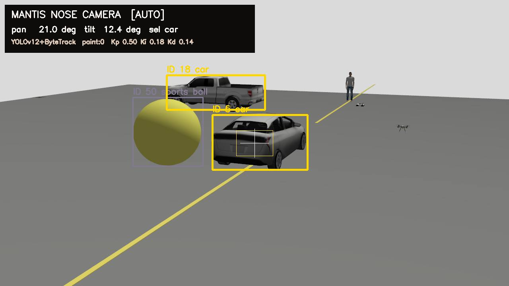

MANTIS / simulation camera viewRobotic perception
MANTIS
Painter
Find an object. Keep it in view. A vision-guided pan/tilt tracker with persistent object identity and a live simulation dashboard.
Python / OpenCV / YOLO / Gazebo
Explore project